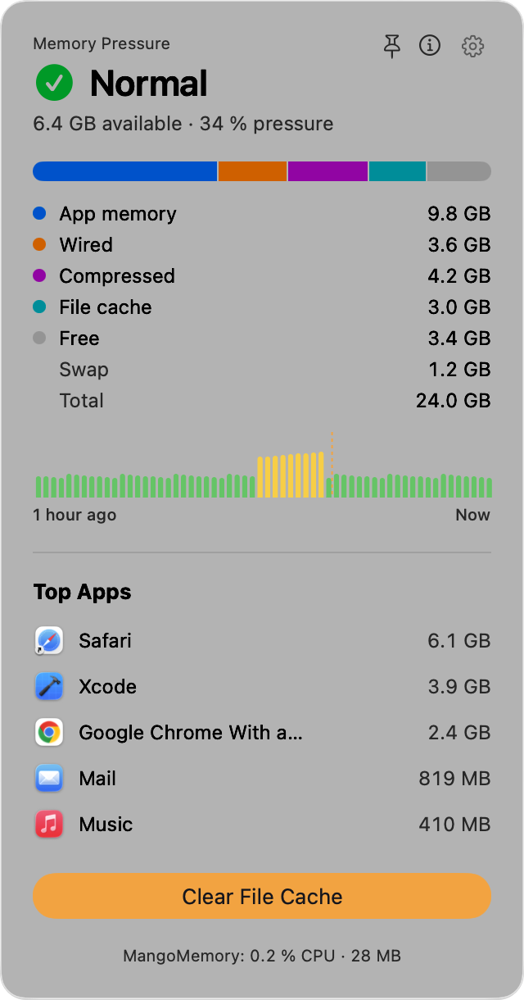
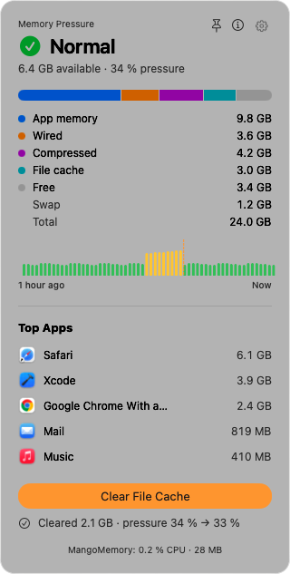
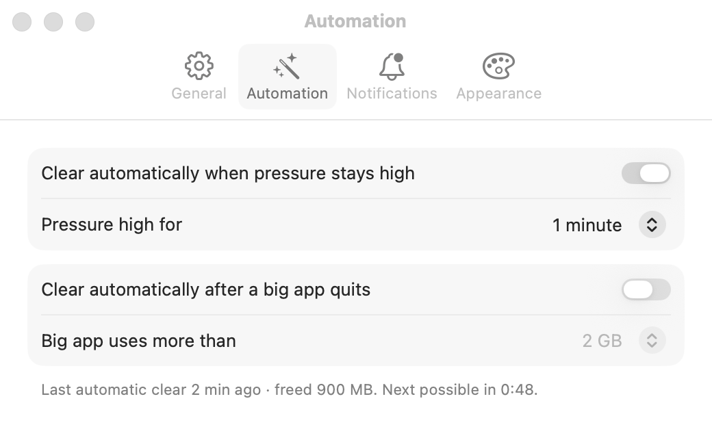

Pressure first
Normal, High, or Critical: how hard macOS is working to find memory, the same signal Activity Monitor uses. The menu bar glyph changes shape and color, so you notice without reading.
MangoMemory lives in your menu bar. It shows memory pressure, the number macOS actually cares about, finds the app using your RAM, and clears the file cache with Apple's own purge. No tricks, no upsell.

They count free memory, which is low on every healthy Mac: macOS puts spare RAM to work as file cache on purpose. MangoMemory shows what matters instead.
Normal, High, or Critical: how hard macOS is working to find memory, the same signal Activity Monitor uses. The menu bar glyph changes shape and color, so you notice without reading.
The five apps using the most memory, with their helper processes counted in (Safari's web pages count toward Safari). Hover a row to Quit; if an app refuses, Force Quit asks first.
Clear File Cache runs /usr/sbin/purge and tells you what it emptied: “Cleared 1.8 GB · pressure 53 % → 52 %”. When there is little to clear, it says so.


purge only runs as root, so MangoMemory installs a tiny helper through Apple's SMAppService, which you approve once in System Settings.
The helper runs /usr/sbin/purge and nothing else. It takes no arguments from anyone.
It answers only MangoMemory signed by our team, enforced by a code-signing check on every connection.
Turn it off any time in System Settings › General › Login Items & Extensions.
No analytics, no accounts, no servers. MangoMemory reads memory statistics on your Mac only. Settings sync, if you leave it on, writes one small file to your iCloud Drive. The code is open: read every line on GitHub.
No. macOS fills spare memory with file cache so files open faster, and hands it back the moment an app needs it. Watch pressure, not Free.
Usually not by much, and MangoMemory says so. The emptied cache becomes free memory, but macOS already counted file cache as available, so pressure typically moves a point or two. It helps most right before something memory-hungry. The cache refills as you use files.
App Store apps must run in the sandbox, which forbids the root helper that runs purge and limits looking at other apps' memory. We'd rather ship the real thing, signed with Developer ID and notarized by Apple.
Macs with Apple silicon running macOS 26 Tahoe or later.
Turn the helper off in System Settings › General › Login Items & Extensions, quit MangoMemory from its gear menu, and move it to the Trash.